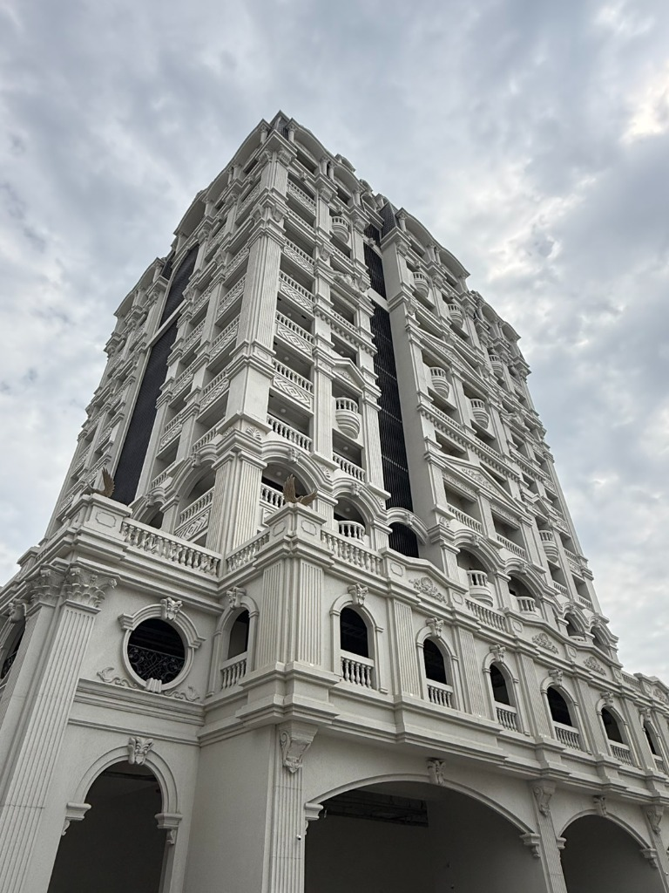

01 什麼情況下，需要考慮外牆更新？
建築外牆是抵禦風雨日曬的第一道防線。當立面出現以下幾種常見現象時，通常代表牆體表面保護層已開始老化，值得列入維護評估：
外牆褪色、粉化或塗層剝落
漆面受紫外線長期照射後失去光澤，表面用手觸摸有白色粉末，或局部出現起泡、片狀剝落，失去原有的防護與美觀功能。
牆面出現裂縫或滲水疑慮
窗框周邊、樓層接縫、女兒牆或牆體表面產生細微裂紋，雨天伴隨水痕甚至室內壁癌潮濕，顯示水氣可能已滲入結構層。
建築外觀陳舊，希望提升整體視覺價值
企業廠辦、商辦大樓或集合住宅因年代久遠造成立面髒污斑駁，希望藉由外觀翻新提升企業品牌形象、商用門面質感或建築整體資產價值。
02 外牆更新，除了重新粉刷還有哪些選擇？
針對不同建築立面條件與維護目標，外牆更新常見有以下三種主要處理方向：
- 外牆塗裝更新 改善牆面色彩與表面質感，提供立面基礎的耐候防護。可依建築環境需求選擇合適的建築塗料系統（如平光彈性塗料、砂壁質感或仿石材紋理漆），是工期相對精簡俐落的更新方式。
- 既有牆面修繕 針對早期磁磚、石材或水泥砂漿牆面，依現況進行局部剔補、安全穩固與界面整平打底。先排除鬆脫掉落隱患與基底不良問題，再進行後續塗裝或飾面更新。
- GRC 造型構件 除了牆面本身的塗裝更新，若建築原有設計或更新圖說包含立體裝飾，亦可透過 GRC（玻璃纖維強化水泥）構件增加建築立面的線條、深淺陰影與造型層次。
03 除了牆面翻新，也可以考慮 GRC 造型構件
騰煇企業除了承接建築外牆塗裝工程，也具備 GRC 造型構件相關工程能力。相較於平面式的色彩翻新，造型構件能為建築立面帶來更豐富的空間表情：
立面線條與視覺層次：GRC 具備高強度、輕量化與可塑性佳的物理特性，常應用於立面線板、窗框包邊、入口雨遮、女兒牆壓頂及特殊造型飾板，能有效豐富立面視覺深度。
工程配合與適用評估：GRC 構件是否適合納入外牆更新，仍須依建築現況、原有結構承載、既有工程圖說與現場安裝條件綜合評估。

若欲參考更多 GRC 造型構件在不同類型建築上的實際應用案例，歡迎瀏覽騰煇官網：工程案例分享 →
04 委託外牆更新前，業主可以先確認什麼？
在向工程團隊洽詢或評估報價前，業主若能先釐清以下三個核心問題，能讓前期溝通更有效率、方案更貼近實際需求：
- 01 目前最想解決的核心問題是什麼？
是單純改善牆面老化的外觀問題，還是伴隨壁癌漏水的滲水疑慮？釐清核心目標，才能精準界定工程首要處理工項。 - 02 預期的更新範圍與希望達成的效果？
是全棟四面翻新還是特定迎風正面？希望達成平整耐候素色、仿真石材紋理，還是需要評估局部 GRC 造型構件增加層次？ - 03 報價項目、施工範圍與責任歸屬是否清楚？
報價單是否清楚載明包含哪些施工項目（如表面清洗、基底整平、防水處理、面漆道數）、是否有明確的責任界線與保固約定？確認細節可避免日後認知落差。
05 常見問題 FAQ
Q1: 外牆重新粉刷，就能解決滲水問題嗎？
不能保證。外牆塗料主要提供立面表層的耐候阻隔防護；如果滲水根源來自窗框填縫老化、結構開裂、伸縮縫失效或頂樓防水破損，水氣依然會自內部破壞新塗層。若有漏水現象，應先釐清原因並做好基礎止漏防護，塗裝才能達到預期的保護效果。
Q2: 外牆更新一定要拆除原有表面材料（如磁磚）嗎？
不一定，須視原有表面材料的附著狀況而定。若既有表面經敲擊檢查確認附著良好、無鬆脫剝落風險，可評估採用專用抗裂界面砂漿進行整平與塗裝更新；但若已有大範圍空鼓或掉落隱患，為確保公共安全，仍須確實剔除或敲除重作。
Q3: 什麼情況下可以評估加入 GRC 造型構件？
當建築立面更新不只希望改變顏色，而是希望透過線板、門面立體邊框或造型裝飾增加層次感，且既有圖說已規劃或現場結構條件具備固定承載能力時，即可評估導入 GRC 造型構件配合施作。
06 洽詢外牆工程需求
建築外牆更新涉及現況診斷、工法選擇與預算效益評估。若更新計畫涉及塗裝工程或 GRC 造型構件，事先確認圖說、材料、施工條件與責任分工，能讓工程推展更加順利。
洽詢外牆工程需求
騰煇企業提供建築外牆塗裝及 GRC 造型構件相關工程服務。若您有外牆更新或相關工程需求，歡迎提供建築現況照片與預計施作項目，進一步洽詢適用的工程服務與承作範圍。
洽詢外牆工程需求 →